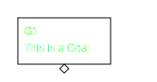

Basic usage
This little program renders Goal Structuring Notation in a YAML format to a scalable vector graphics (SVG) image.
Usage
You can create an SVG like this:
gsn2x <yourgsnfile.yaml>
The output is an argument view in SVG format and automatically written to <yourgsnfile.svg>. If more than one input file is provided, they are treated as modules.
Options
Usage: gsn2x [OPTIONS] <INPUT>...
Arguments:
<INPUT>... Sets the input file(s) to use. Only relative paths are accepted.
Options:
-h, --help Print help
-V, --version Print version
CHECKS:
-c, --check Only check the input file(s), but do not output graphs.
-x, --exclude <EXCLUDED_MODULE> Exclude this module from reference checks.
OUTPUT:
-N, --no-arg Do not output of argument view for provided input files.
-f, --full <COMPLETE_VIEW> Output the complete view to file with name <COMPLETE_VIEW>. [default: complete.svg]
-F, --no-full Do not output the complete view.
-a, --arch <ARCHITECTURE_VIEW> Output the architecture view to file with name <ARCHITECTURE_VIEW>. [default: architecture.svg]
-A, --no-arch Do not output the architecture view.
-e, --evidences <EVIDENCES> Output list of all evidences to file with name <EVIDENCES>. [default: evidences.md]
-E, --no-evidences Do not output list of all evidences.
-o, --output-dir <OUTPUT_DIRECTORY> Emit all output files to directory <OUTPUT_DIRECTORY>. [default: .]
OUTPUT MODIFICATION:
-l, --layer <LAYERS> Output additional layer. Can be used multiple times.
-s, --stylesheet <STYLESHEETS> Links a stylesheet in SVG output. Can be used multiple times.
-t, --embed-css Embed stylehseets instead of linking them.
-G, --no-legend Do not output a legend based on module information.
-g, --full-legend Output a legend based on all module information.
Syntax in YAML
Elements
The following Goal Structuring Notation (GSN) core elements are supported:
| Element Type | Prefix |
|---|---|
| Goal | G |
| Assumption | A |
| Justification | J |
| Solution | Sn |
| Context | C |
| Strategy | S |
Every element is defined by a prefix (as shown in the table above) and an arbitrary identifier then.
Examples
G1:
G-TopLevelGoal:
C_A_certain_context:
Attributes
The only mandatory attribute is text that is the textual contents of the element.
An optional supportedBy gives a list of the supporting arguments. Thus, Goal, Strategy and Solution can be listed here.
An optional inContextOf links Justifications, Contexts or Assumptions.
Every element may have an optional url attribute that creates a navigation link in the resulting SVG.
This should support finding information more easily.
Goals and Strategies can be undeveloped i.e., without supporting Goals, Strategies or Solutions.
These elements should marked with undeveloped: true, otherwise validation will emit warnings.
Example
G1:
text: This is a Goal
supportedBy: [S1]
inContextOf: [C1]
S1:
text: This is a Strategy
C1:
text: This is a Context
Please see examples/example.gsn.yaml for an example of the used syntax.
Summary
| Attribute | Optional |
|---|---|
| text | no |
| supportedBy | yes |
| inContextOf | yes |
| undeveloped1 | yes |
| url | yes |
| classes2 | yes |
| level3 | yes |
| nodeType4 | yes |
Mutually exclusive to supportedBy.
See Stylesheets.
See Layout.
When providing a nodeType you do not need to follow the standard prefix scheme above.
Just give Goal, Assumption, Justification, Solution, Context and Strategy to give the type of the element.
Checks
Validation checks
The tool automatically performs the following validation checks on the input YAML.
Validations can be performed on individual input files.
| ID | Meaning |
|---|---|
| V01 | All IDs must either start with a known prefix or a node_type must explicitly set. |
| V02 | All Goals and Strategies must be either marked with undeveloped: true or have supporting Goals, Strategies or Solutions. |
| V03 | Goals and Strategies marked as undeveloped, must have no supporting arguments. |
| V04 | All elements listed under supportedBy and inContextOf must be known elements types and semantically sensible (e.g. a Justification cannot be listed under supportedBy). |
| V05 | All referenced elements in supportedBy and inContextOf must be unique i.e., no duplicates in the list. |
| V06 | All referenced elements in supportedBy and inContextOf must not refer to the element itself. |
| V07 | All elements listed as extending other elements must be known elements of the current module and semantically sensible (see V04). |
| V08 | The IDs start contradicts the type of the element set with node_type. |
The following checks apply to the complete set of input files.
| ID | Meaning |
|---|---|
| C01 | There should be only one but must be at least one top-level element (G,S,C,J,A,Sn) unreferenced. |
| C02 | The top-level element must be a Goal. A top-level element is an element that is not referenced by any other element. |
| C03 | All referenced elements in supportedBy and inContextOf must exist. |
| C04 | There must be no circular supportedBy references. |
| C05 | There should be more than one usage of the same level. |
| C06 | All module names must be unique. |
| C07 | All IDs must be unique across all modules. |
| C08 | All elements must be reachable from the root elements. This message can e.g. happen if there are multiple independent graphs where one contains circular references only. |
| C09 | All extended modules must exist. |
| C10 | All extended elements must exist in the named module and must be undeveloped. |
Uniqueness of keys (i.e. element IDs) is automatically enforced by the YAML format.
If called with option -c or --check the input file is only checked for validity, but the resulting graph is not written.
The checks for references (Cxx) can be skipped for individual files by using the -x option.
Format of messages
Error messages and warnings are printed to stderr.
The following format is used:
(Warning|Error): \((?<module>.+)\) \((?<num>[CV][0-9][0-9])\): (?<msg>.+)
Advance Use-cases
There are a few extra, advanced use-cases:
More influence on the layout of elements
Vertical placement
To influence the rendered image, you can add an identifier to a GSN element with the level attribute.
All elements with the same identifier for level will now show up on the same vertical level.
This is especially useful, if e.g., two goals or strategies are on the same logical level, but have a different "depth" in the argumentation (i.e. a different number of goals or strategies in their path to the root goal).
See the example for usage. The strategies S1 and S2 are on the same level.
It is recommended to use level only for goals, since related contexts,
justifications and assumptions are automatically put on the same level.
Horizontal placement
The order of the GSN elements on the same horizontal rank can be influenced by their ID.
The elements are sorted lexicographically. Thus, a goal G1 if placed on the same vertical level is placed before G2,
if they have the same depth of their supporting arguments.
There can be situations (e.g. a n:m relation between goals and solutions) that lead to weird looking graphs.
You may even encounter the following message Rendering a diagram took too many iterations. See README.md for hints how to solve this situation.. In such cases, please file an issue on GitHub, so I can see how the algorithm can be improved.
Additional layers
Additional attributes of an element are ignored by default.
With the command line option -l or --layers you can enable the output of those additional attributes.
By using this feature different views on the GSN can be generated.
Example
G1:
text: This is a Goal
supportedBy: [S1]
inContextOf: [C1]
layer1: This is additional information for G1.
S1:
text: This is a Strategy
layer1: This is additional information for S1.
C1:
text: This is a Context
layer1: This is additional information for C1.
In this example, a call to gsn2x -l layer1 will show the additional information to each element prefixed with LAYER1: .
Of course, using text, inContextOf, supportedBy, url, undeveloped, level or classes are not sensible parameters to pass for the -l option.
Please note that using module and passing it as a layer option will also not work.
It is intentional that information is only added for a view, but not hidden to ensure consistency of the GSN in all variants.
Stylesheets for SVG rendering
You can provide (multiple) custom CSS stylesheets for SVG via the -s or --stylesheet options.
The path may be relative to the current working directory, absolute, or an URL (i.e. starting with http://, https:// or file://).
When adding -t or --embed-css on the command line, the CSS stylesheets will be embedded in the SVG.
If an output path is provided (see Basic usage), the stylesheet(s) will be copied there. If a relative path is used, the relative path to the current working directory is preserved. If an absolute path is used, the stylesheet will be copied to the root of the output path.
If a URL (see above for definition) is provided for a stylesheet, it is neither embedded nor copied to an output directory.
Classes and styles
Every element will also be addressable by id. The id is the same as the YAML id.
This table shows the CSS classes assigned to a certain element:
| Class | Assigned to | SVG Element |
|---|---|---|
| gsndiagram | The complete diagram | svg |
| gsnelem | All elements | g |
| gsngoal | Goal | g |
| gsn_undeveloped | Undeveloped | g |
| gsnsltn | Solution | g |
| gsnawaysltn | Away Solution | g |
| gsnstgy | Strategy | g |
| gsnasmp | Assumption | g |
| gsnawayasmp | Away Assumption | g |
| gsnjust | Justification | g |
| gsnawayjust | Away Justification | g |
| gsnctxt | Context | g |
| gsnawayctxt | Away Context | g |
| gsnmodule | Module | g |
gsn_module_module | Module name | g |
| gsnedge | All edges | path |
gsnlay_<layer> | Layer <layer> | path |
| gsninctxt | In Context Of | path |
| gsnspby | Supported By | path |
| gsncomposite | Composite (In Context Of AND Supported By) | path |
You can assign additional classes by adding the classes: attribute. It must be a list of classes you want to assign.
Additional layers will be added as CSS classes, too. A layer1 will e.g. be added as gsnlay_layer1.
For more information on how to use CSS with SVGs, see here.
Example
The GSN YAML:
G1:
text: This is a Goal
classes: [additionalclass1, additionalclass2]
undeveloped: true
The corresponding CSS:
.additionalclass1 path { fill: red; }
.additionalclass1 text,a { fill: white; }
The result looks like this:

Highlighting nodes when navigating
The CSS :target pseudo class can be used to highlight the node you clicked on in the previous image.
An example could look like this:
g:target path {
fill: lightsteelblue;
}
List of evidences
An additional file that lists all the evidences in the input file is output by default in evidences.md.
See examples/evidences.md for an example.
The format can be used in Markdown and reStructuredText files.
If the list of evidences should not be output, use the -E option.
You can use the -e option to rename the standard evidences.md to another file name, but not subdirectory.
The -o option also applies to the evidences file.
Markdown from examples/evidences.md
List of Evidences
-
Sn1: Solution 1
examples_example_gsn_yaml
https://github.com/jonasthewolf/gsn2x
-
Sn2: Solution 2
examples_example_gsn_yaml
-
Sn3: Solution 3
examples_example_gsn_yaml
-
Sn4: Solution 4
examples_example_gsn_yaml
-
Sn5: Solution 5
examples_example_gsn_yaml
Modular extension
gsn2x partially supports the Modular Extension of the GSN standard (see Standard support). Module Interfaces (Section 1:4.6) and Inter-Module Contracts (Section 1:4.7) are not supported.
Each module is a separate file. The name of the module is the file name (incl. the path provided to the gsn2x command line).
If modules are used, all related module files must be provided to the command line of gsn2x.
Element IDs must be unique across all modules. Checks will by default be performed across all modules.
Check messages for individual modules can be omitted using the -x option.
The argument view of individual modules will show "away" elements if elements from other modules are referenced.
Note: There is no "away strategy" in the standard.
In addition to the default argument view for each module, there are two output files generated (if more than one input file is provided):
- Complete View (default to:
complete.svg) - Architecture View (default to:
architecture.svg)
You can only change the file names of these additional views.
They are put in the directory that all input files have in common.
The -o option can be used for these views, too.
If the argument view should not be updated, use the -N option.
If the complete view should not be output, use the -F option.
If the architecture view should not be output, use the -A option.
Complete view
The complete view is a similar to an argument view for a single module, but showing all modules within the same diagram. The modules are "unrolled".
See example here.
{kind=link}
Architecture view
The architecture view only shows the selected modules and their dependencies. THe architecture view is navigable to the module argument view.
The architecture view only contains the links to the individual module files, if they actually exist when generating the architecture view.
See example here.
{kind=link}
Example:
gsn2x -f full.svg -a arch.svg main.yml sub1.yml sub3.yml
This will generate the argument view for each module, the complete view (-f full.svg) of all modules and the architecture view (-a arch.svg).
Developing undeveloped elements from other modules
In a customer supplier relationship it may be helpful to develop otherwise undeveloped elements from other modules. This allows creating distributed assurance cases.
Example for a module with undeveloped elements:
module:
name: template
brief: Template for an assurance case
G1:
text: A claim somebody else should support
undeveloped: true
Example for developing those elements in another module:
module:
name: instance
brief: Extending instance
extends:
- module: template
develops:
G1: [G2]
G2:
text: This is the argument provided by somebody else.
supportedBy: [Sn1]
Sn1:
text: A solution
Optional module information
It is possible to add additional module information in the source YAML.
This allows describing the module`s name and an optional brief description.
Even arbitrary information can be added.
name and brief are mandatory if a module is added.
module:
name: MainModule
brief: This is a short description of the module
additionalInformation:
v1: Changed line 2
v2: Added line 4
The module information is printed as part of a legend for the argument view.
You can use the -G option to suppress the legend completely,
or the -g option to limit it to name, brief and the time and date of generation of the SVG.
Standard support
This tool is based on the Goal Structuring Notation Community Standard Version 3.
This table shows the support of gsn2x for the different parts of the standard.
| Standard | Support |
|---|---|
| Core GSN | ✅ full |
| Argument Pattern Extension | ❌ not planned |
| Modular Extension | 🟡 partially, see Modular Extension |
| Confidence Argument Extension | ❌ not planned |
| Dialectic Extension | ❌ not planned |
Design goals
I noticed that it might make sense to add some information about the goals I have set for myself for this project:
-
Everything-as-code
The tool should work in a continuos integration environment. The input format should be diff-able to support common git workflows with pull/merge requests.
-
Simplicity
I would like to keep things simple. Simple for me and others.
That means the input format should be simple to learn and edit manually in any editor. I also did not want invent a new DSL (domain-specific language) for that purpose. YAML (input file format) might not be the best format, but it serves as a good tradeoff for my purposes. Moreover, it can be parsed by other programs easily, too.
-
Standard conformance
I would like the program output to be very close to the GSN standard.
I don't want to redefine the semantics or add additional ones. The standard was created so that as many people as possible have some common grounds. If I added new fancy stuff, everyone might have a different interpretation of that again.
-
As few dependencies as possible
Since I understand that this tool might be used in some corporate environment where usage of free and open-source software might be limited, I try to keep the dependencies of this program as few as possible.
I used a very relaxed license and try to take care that it is compatible with those of the dependencies.
-
Full control by the user how the diagram is layed out
Creating an optimal rendering for all different use-cases is incredibly difficult. I failed in creating an algorithm that would allow for that. When trying I recognized that it is anyhow preferable to give the user full control over how the diagram should look like.
History
I also noticed that (also for myself) it is good to note down some history of the project:
-
It all started out in 2017 with the need for graphically representing some argumentation at work. I wrote a tiny Python script that used a jinja template to transform the YAML syntax into something Graphviz could understand.
From there Graphviz could generate different output formats. That's where the
xingsn2xis from. -
It got obvious that some validation, especially on the uniqueness and reference resolution is needed to handle larger argumentation.
I did not want to write those validations in Python, but in my favorite programming language Rust. I released the first Rust version in July 2021.
-
I desperately tried adding the modular extension by convincing Graphviz to draw what I want, but I failed. I finally made decided to no longer output DOT, but directly generate SVGs from the program. This required writing a specialized version for rendering the tree on my own which ended up in version 2 finally released in April 2022.
-
I tried hard improving the layout algorithm over time but I failed to come up with a satisfying solution. Moreover, I recognized that it is anyway preferable if the user is in full control of the layout of the diagram. Thus, I decided to redesign the layout algorithm and create version 3.
Any feedback, especially the use-case in your company is very much appreciated.